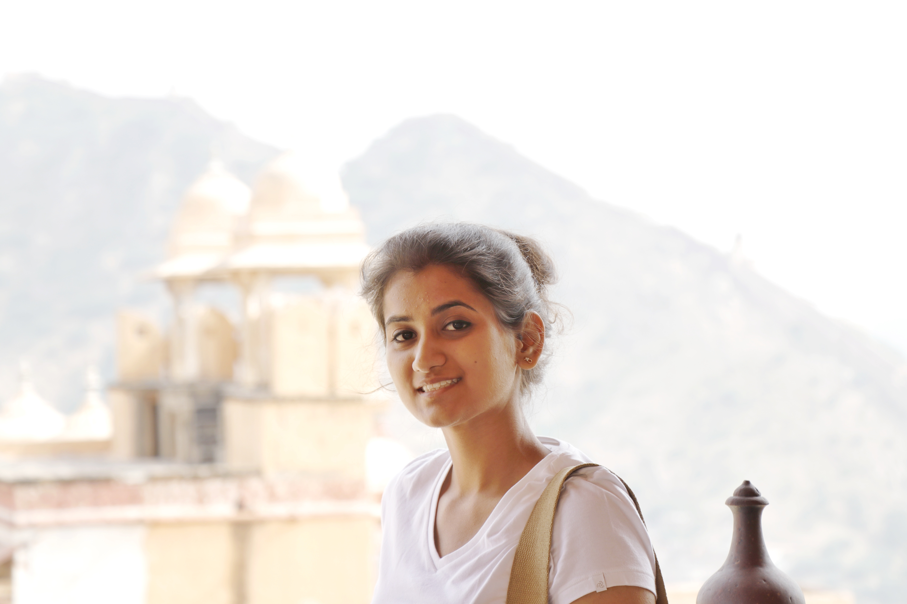

About Me
Hi! Monika here :)
I am an architect recently graduated from Rajasthan Technical University. During the course of my architectural education and practical training, I developed keen interest in problem solving, analytical and rational thinking, conceptualizations, research and visual comprehensions. I am keen towards researches and new explorations and I aspire to pursue design, learn and evolve along it.